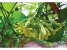
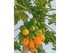
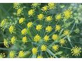
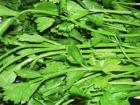
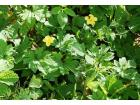
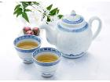
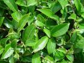
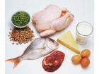

LTS: Trong thư gửi về chuyên trang Khoẻ & Vui, bạn đọc Phan Thị Cúc Tần, 53 tuổi, ngụ ở An Giang hỏi công dụng của hoa thiên lý. Bà Tần cho biết ở quê bà hoa thiên lý dùng nấu canh, xào với thịt ăn rất ngon. Mới đây ra Hà Nội du lịch, bà được giới thiệu hoa dạ lý hương cũng giống y như thiên [ … ]

Các nước châu Á nổi tiếng là quê hương của các loại thảo dược quý đã được sử dụng rộng rãi trong ngành công nghiệp mỹ phẩm trên toàn thế giới. Tận dụng những gì có sẵn trong tự nhiên, bạn có thể tự chăm sóc sắc đẹp và sức khỏe ngay tại nhà mà không hề tốn kém.
Đu đủ
Quả đu đủ rất giàu vitamin, [ … ]
Theo truyền thuyết, bông hoa cúc nhỏ bé có nguồn gốc từ Belides, một trong các nữ thần chăm sóc các khu rừng. Một hôm, khi Belides đang nhảy múa với người yêu của mình là Ephigeus, cô đã lọt vào sự chú ý của Vertumrus, nam thần cai quản các vườn cây. Để bảo vệ cô khỏi sự săn đuổi này, chúa của loài [ … ]
Trong những kỳ nghỉ kéo dài, nhất là dịp Tết, mọi người thường gặp phải các vấn đề về tiêu hóa như đầy bụng, đầy hơi, buồn nôn. Những lúc này, bạn có thể dùng những thảo dược như: rễ gừng, vỏ cam, hạt thì là… làm thuốc cho mình. Trong hàng thế kỷ nay, những loại cây có vị hơi đắng hoặc thơm có thể giúp [ … ]
Đôi mắt là cửa sổ tâm hồn, chỉ cần chút mỏi mệt, thâm quầng cũng làm cho mắt mất đẹp. Để che bớt những “báo cáo” xấu đó, hãy sử dụng các phương pháp cây nhà lá vườn. Mí mắt bị sệ khi luống tuổi trông rất mệt mỏi và xấu. Để mí mắt khỏe, cần tập thể dục cho mí bằng cách dùng hai bàn tay vuốt ngược từ [ … ]
Apigenin, một chất tự nhiên có trong cần tây, mùi tây…, có thể được dùng để trị bệnh ung thư vú.
Các nhà nghiên cứu thuộc Trường đại học Missouri (Mỹ) phát hiện rằng, apigenin giúp làm teo khối u ung thư vú do progestin gây ra.
Progestin là một loại hormone tổng hợp dành cho phụ nữ để giảm bớt các [ … ]
Tàn nhang thường gặp ở những người có làn da mỏng, trắng, mịn và có tính di truyền. Chỉ là một dạng khuyết tật ngoài da, liên quan đến sự tăng trưởng chất sắc tố ở lớp trung bì và lớp đáy. Tuy nhiên tàn nhang không ảnh hưởng đến sức khỏe của bạn mà chỉ ảnh hưởng về tính thẩm mỹ. Bạn có thể sử dụng thảo [ … ]
Giảm cân là một vấn đề nhức đầu của biết bao nhiêu người. Không chỉ riêng các bạn nữ mới lo lắng chăm sóc đến vóc dáng và sức khỏe của mình mà đấng mày râu cũng thể hiện sự quan tâm không kém. Vậy làm sao để có thể giảm cân bằng thảo dược một cách hiệu quả nhất?
Béo phì là do sự mất cân bằng giữa năng [ … ]
Tắm trắng bằng thảo dược là phương pháp được rất nhiều người ưa chuộng vì nó tạo cảm giác thiên nhiên, lành tính, giúp thư giãn, xả stress. Đây cũng là phương pháp tắm trắng bí truyền mà các Thái Hậu thời xưa của Trung Quốc sử dụng. Với hơn 200 loại thảo dược quí hiếm, tắm trắng bằng thảo dược nổi trội [ … ]
Mụn trứng cá là một dạng bệnh da liễu mà hầu hết ai cũng bị. Đôi khi nó làm bạn khó chịu và mất tự tin khi giao tiếp. Hôm nay goithaoduoc.vn sẽ chia sẻ với bạn các phương pháp dùng thảo dược trị mụn trứng cá.
Hiện nay có rất nhiều cách để trị mụn trứng cá, nhưng trong đó các phương pháp trị mụn trứng [ … ]
Rất nhiều người đã mất tự tin vì da bị nám. Vậy da bị nám là do đâu? Trước hết chế độ dinh dưỡng của bạn phải hợp lý, nên ăn nhiều rau, củ, quả ... đặc biệt là rau xanh. Nếu đã bị nám bạn nên kiêng ăn nhiều thịt vì trong thịt có acid làm cho da nám hơn.
Làm thế nào để phòng nám ?
Bạn nên uống nhiều [ … ]
Thảo dược quý hạt Methi là một trong số ít dược thảo quý được nhiều quốc gia và WHO công nhận là có hoạt tính giúp hạ lượng đường trong máu. Hôm nay, chúng ta hãy cùng tìm hiểu về tính năng và lợi ích của loại thảo dược này.
Bạn có biết số người mắc bệnh đái tháo đường hiện nay còn nhiều hơn số người [ … ]
 Uống trà là thói quen của rất nhiều người Việt Nam, đặc biệt là trà thảo dược. Mỗi loại trà đều có một mùi thơm đặc trưng khác nhau mang lại cho người uống một cảm giác và hương vị tuyệt vời. Vậy việc uống trà sẽ có những lợi ích gì ?
1. Trà thảo dược giúp cho quá trình trao đổi chất được tăng cường. [ … ]
Tuổi thanh xuân là tuổi tràn đầy sức sống, nhiều ước mơ và hoài bão. Đó cũng là thời điểm mà biết bao người luôn luôn muốn giữ lại để cho mình cảm thấy luôn trẻ trung và tươi mới ! Vậy làm thế nào để có thể giữ được tuổi xuân ? Bạn hãy khám phá các bí quyết kéo dài tuổi xuân bằng thảo dược.
Sau đây là [ … ]
|
|
|
|
|
|

 Hoạt động khai thác quá mức có thể khiến đông trùng hạ thảo, loài nấm mà nhiều...
Hoạt động khai thác quá mức có thể khiến đông trùng hạ thảo, loài nấm mà nhiều...
 Bất chấp những cơn mưa đầu mùa tuôn xối xả, nhóm người vẫn cố sức vượt con...
Bất chấp những cơn mưa đầu mùa tuôn xối xả, nhóm người vẫn cố sức vượt con...
 Cách đây chừng 15 năm, ngành y tế đã xôn xao bởi một chuyện động trời đó là Việt...
Cách đây chừng 15 năm, ngành y tế đã xôn xao bởi một chuyện động trời đó là Việt...
 Thiên lý là một loại cây rất thân thuộc với người dân Việt Nam, là một cây thuốc...
Thiên lý là một loại cây rất thân thuộc với người dân Việt Nam, là một cây thuốc...
 Mộc hương là cây thảo sống lâu năm, rễ mập. Thân hình trụ rỗng, cao 1,5 – 2m. Vỏ...
Mộc hương là cây thảo sống lâu năm, rễ mập. Thân hình trụ rỗng, cao 1,5 – 2m. Vỏ...
 Thời kỳ tiền mãn kinh cơn bốc hoả thường xuyên xảy ra kèm theo những triệu chứng...
Thời kỳ tiền mãn kinh cơn bốc hoả thường xuyên xảy ra kèm theo những triệu chứng...
 Theo thông tin trên mạng thì có khoảng hơn 1.300 loài tầm gửi. Hầu hết các loài tầm...
Theo thông tin trên mạng thì có khoảng hơn 1.300 loài tầm gửi. Hầu hết các loài tầm...
 Cốt toái bổ còn có tên khác là bổ cốt toái, tổ phượng, tổ rồng, tắc kè đá. Tên...
Cốt toái bổ còn có tên khác là bổ cốt toái, tổ phượng, tổ rồng, tắc kè đá. Tên...
 Huyết dụ còn tên gọi là phật dụ, thiết thụ (trung dược), chổng đeng (Tày), co...
Huyết dụ còn tên gọi là phật dụ, thiết thụ (trung dược), chổng đeng (Tày), co...
 Vừng đen (miền Nam gọi là mè đen) là một thực phẩm có giá trị dinh dưỡng cao và vị...
Vừng đen (miền Nam gọi là mè đen) là một thực phẩm có giá trị dinh dưỡng cao và vị...